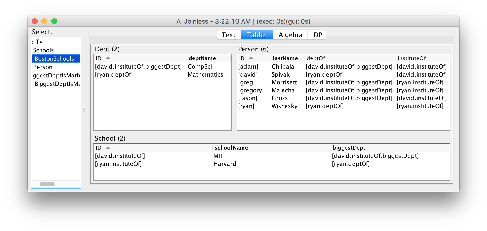
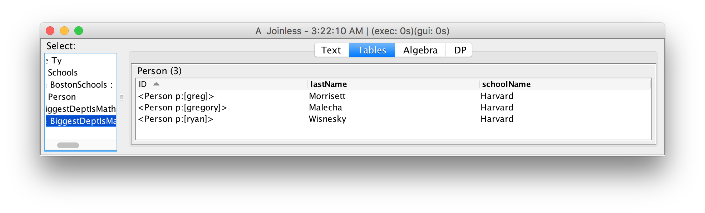
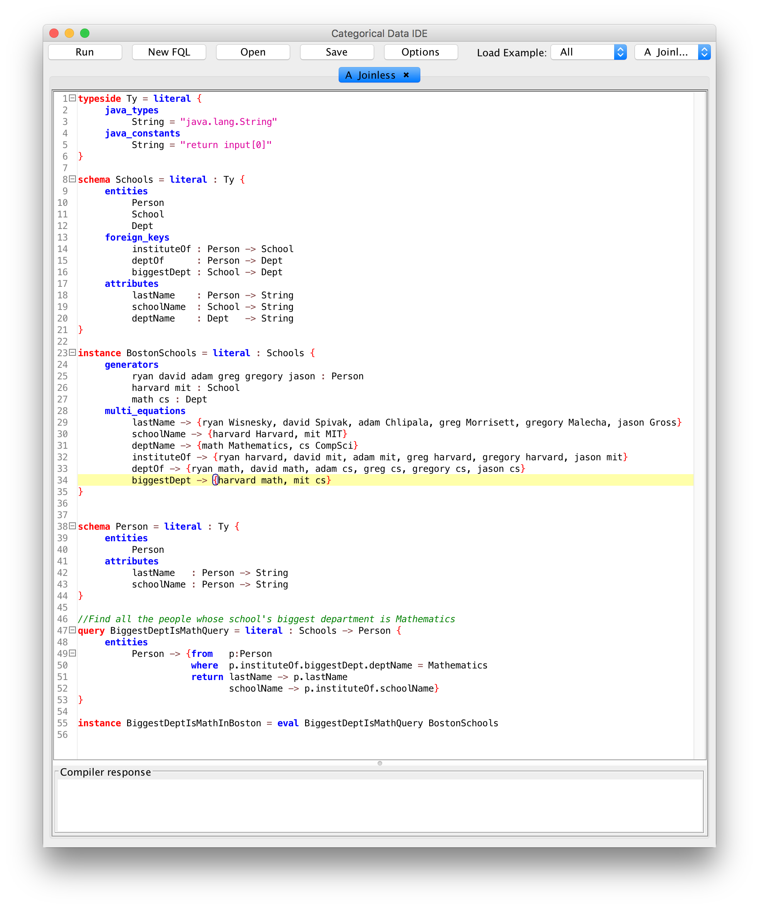

Categorical Databases
Home |
Download |
Getting Started |
Manual |
Wiki |
Papers |
Screen Shots |
Github |
Google Group |
Conexus |
Contact
Transparent Joins
Many data integration tasks require large numbers of joins. In addition to being a potential performance bottleneck, large joins are difficult to write and debug; a single missing condition in a where clause can cause a query to return an incorrect result. In CQL, foreign keys can be followed (dereferenced) directly, so that many constuctions that require joins in SQL do not require joins in CQL.
This example (built in to the IDE with name Joinless) defines a source schema about schools, faculty, and departments, and a query to find everyone who works in a school whose largest department is mathematics. The query does not require any joins; in SQL, this query would require two joins.
We start by defining a source schema for schools, faculty, and departments, with foreign keys specifying the department and institute of each person, and the biggest department in a school:
typeside Ty = literal {
java_types
String = "java.lang.String"
java_constants
String = "return input[0]"
}
schema Schools = literal : Ty {
entities
Person
School
Dept
foreign_keys
instituteOf : Person -> School
deptOf : Person -> Dept
biggestDept : School -> Dept
attributes
lastName : Person -> String
schoolName : School -> String
deptName : Dept -> String
}
Here is some sample data, taken from the Boston area:
instance BostonSchools = literal : Schools {
generators
ryan david adam greg gregory jason : Person
harvard mit : School
math cs : Dept
multi_equations
lastName -> {ryan Wisnesky, david Spivak, adam Chlipala, greg Morrisett,
gregory Malecha, jason Gross}
schoolName -> {harvard Harvard, mit MIT}
deptName -> {math Mathematics, cs CompSci}
instituteOf -> {ryan harvard, david mit, adam mit, greg harvard,
gregory harvard, jason mit}
deptOf -> {ryan math, david math, adam cs, greg cs, gregory cs, jason cs}
biggestDept -> {harvard math, mit cs}
}

Our goal is to find all people who work in a school whose biggest department is mathematics. The target schema contains an entity Person and two attributes:
schema Person = literal : Ty {
entities
Person
attributes
lastName : Person -> String
schoolName : Person -> String
}
To populate this schema we write a query that iterates over all people, dereferencing foreign keys (using the dot operator) instead of performing joins:
query BiggestDeptIsMathQuery = literal : Schools -> Person {
entities
Person -> { from p:Person
where p.instituteOf.biggestDept.deptName = Mathematics
return lastName -> p.lastName
schoolName -> p.instituteOf.schoolName}
}
instance BiggestDeptIsMathInBoston = eval BiggestDeptIsMathQuery BostonSchools
The result is displayed in the IDE:
A screen shot of the entire development is shown below:
